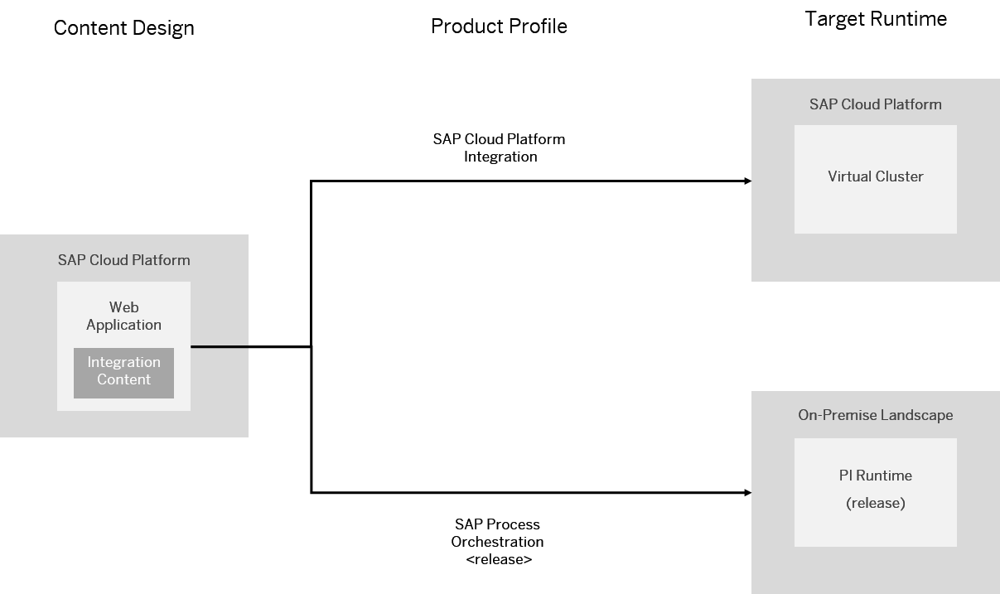

The SAP Cloud Platform Integration Web UI (also known as Content Hub) allows you to use Cloud integration content for different target integration platforms. Accordingly, different product profiles are available to adapt the user interface of the integration content designer to the specifications and capabilities of the target integration platform.
A product profile defines a set of capabilities for Cloud integration content design supported by a specific target integration platform. In particular, a specific product profile supports the configuration of a specific set of adapter types and integration flow steps.
The following product profiles are available:
|
Product Profile |
Target Integration Platform |
|---|---|
|
SAP Cloud Platform Integration |
Cloud-based integration runtime of SAP Cloud Platform Integration |
|
SAP Process Orchestration 7.5, SP0 |
On premise integration runtime of SAP Process Integration (for the specified release) |
|
SAP Process Orchestration 7.5, SP1 |
|
|
SAP Process Orchestration 7.5, SP2 |
|
|
SAP Process Orchestration 7.5, SP3 |
|
|
SAP Process Orchestration 7.5, SP4 |
|
|
SAP Process Orchestration 7.5, SP5 |
Prior to start working with Cloud integration content, you need to know on which target integration platform(s) the Cloud integration content is to be deployed and executed.
If you encounter use cases where both on premise and Cloud-based integration platforms are involved, you might like to have several options and, accordingly, both product profiles are of interest for you.
The following figure illustrates the use case for the product profiles SAP Cloud Platform Integration and SAP Process Orchestration 7.5 SP0.
When you have decided on the product profiles in question, the process is as follows:
Based on your choice, you request an account and tenant at SAP.
As soon as the tenant is available, you connect to it using the Web application (using the Web UI URL provided in the mail you received from SAP).
Under Settings, you choose the default product profile. When you create a new integration flow, this choice will be applied by default.
The integration flow editor shows the options and executes checks based on the chosen product profile. The reason for this is that the target integration platform imposes specific restrictions on the Cloud integration content.
You have the option to configure a product profile also for an individual integration flow (under Runtime Configuration).